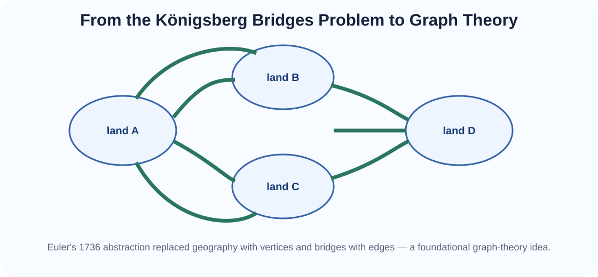
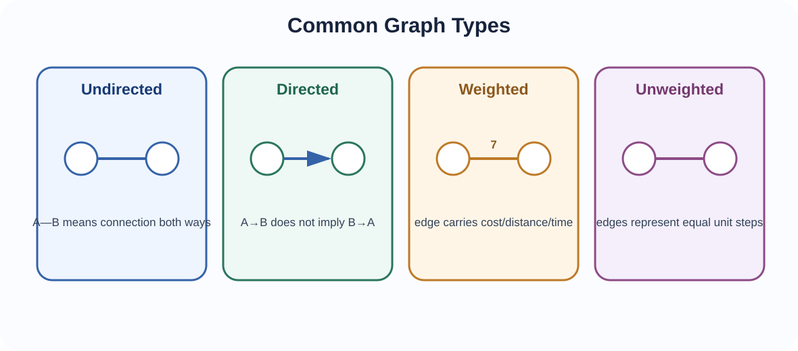
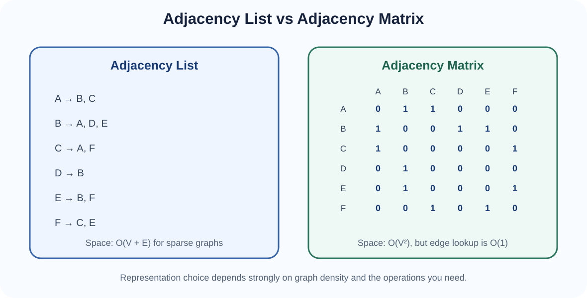
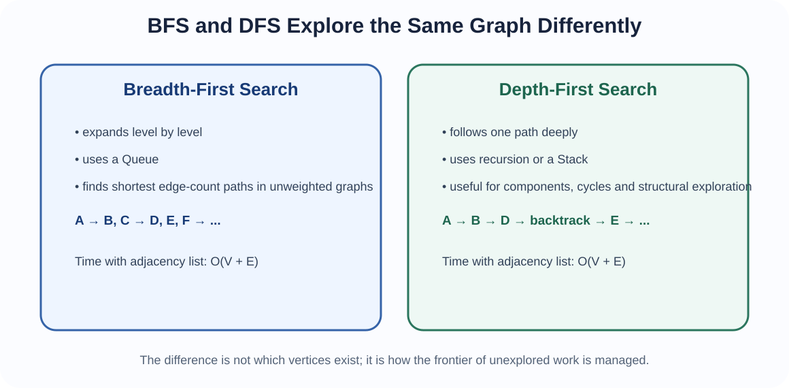
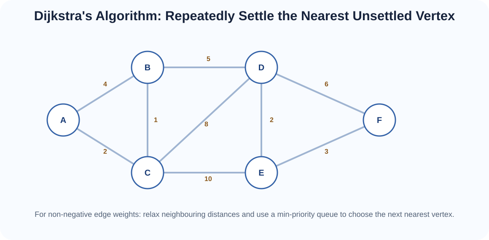

Represent relationships between entities, traverse networks systematically, and find paths using structures already learned in the course.
Many real systems cannot be described naturally as a simple sequence or hierarchy. A road network contains many alternative routes. A social network allows one person to connect to several others. A computer network can contain cycles and multiple paths. A dependency network can contain direction. These situations are naturally modelled using graphs.
Graphs therefore appear in:
One of the best-known starting points of graph theory is Leonhard Euler's 1736 solution to the Seven Bridges of Königsberg problem. Instead of reasoning about the exact geography of the city, Euler abstracted each land region as a point and each bridge as a connection. This change from physical detail to structural relationships is exactly the kind of abstraction used throughout computer science.

A graph is commonly written:
where V is the set of vertices and E is the set of edges.

An edge {A,B} has no direction. If A is connected to B, B is connected to A.
An edge (A,B) points from A to B. A connection from A to B does not imply a connection from B to A.
An edge carries a numeric weight such as distance, cost, travel time, risk or capacity.
Edges are treated as having equal cost, often interpreted as one step.
A simple graph has no self-loops and no duplicate parallel edges between the same pair of vertices.
A tree is a special kind of undirected graph that is connected and contains no cycles. This connects Topic 7 directly to graph theory: every tree is a graph, but not every graph is a tree.
Before running graph algorithms, the graph must be represented in memory. Two core representations are the adjacency matrix and the adjacency list.

For V vertices, an adjacency matrix uses a V × V table. For an unweighted graph:
matrix[i][j] = 1 if edge i→j exists
matrix[i][j] = 0 otherwiseALGORITHM AddUndirectedEdgeMatrix(M, u, v)
M[u][v] ← 1
M[v][u] ← 1ALGORITHM AddDirectedEdgeMatrix(M, u, v)
M[u][v] ← 1An adjacency list stores, for each vertex, the collection of vertices directly connected to it.
A → B, C
B → A, D, E
C → A, F
...ALGORITHM AddUndirectedEdgeList(adj, u, v)
adj[u].append(v)
adj[v].append(u)ALGORITHM AddDirectedEdgeList(adj, u, v)
adj[u].append(v)| Concern | Adjacency Matrix | Adjacency List |
|---|---|---|
| Space | O(V²) | O(V + E) |
| Check edge (u,v) | O(1) | O(deg(u)) typically |
| Enumerate neighbours | O(V) | O(deg(u)) |
| Sparse graphs | Often wasteful | Very suitable |
| Dense graphs | Often attractive | Still valid |
Traversal means systematically visiting reachable vertices while avoiding infinite repetition caused by cycles. Therefore graph traversal normally keeps a visited set.
The two fundamental traversals are:

BFS uses a Queue. The queue stores discovered vertices whose neighbours have not yet been completely explored.
ALGORITHM BFS(adj, start)
create empty set visited
create empty queue Q
add start to visited
Q.enqueue(start)
WHILE Q is not empty
u ← Q.dequeue()
process u
FOR each vertex v in adj[u]
IF v not in visited
add v to visited
Q.enqueue(v)If a vertex is marked only when it is removed from the queue, the same vertex may be added several times by different neighbours. Marking it as soon as it is discovered prevents duplicate frontier entries.
For the graph:
A: B, C
B: A, D, E
C: A, F
D: B
E: B, G
F: C, G
G: E, Fwith neighbours processed alphabetically, BFS from A visits:
The queue evolves roughly as:
[A]
[B, C]
[C, D, E]
[D, E, F]
[E, F]
[F, G]
[G]
[]With an adjacency list, each vertex is processed once and each edge is examined a constant number of times:
With an adjacency matrix, BFS may scan a full row for each visited vertex:
BFS discovers vertices in nondecreasing number of edges from the start. Therefore the first time a vertex is discovered gives a shortest path by edge count in an unweighted graph.
ALGORITHM BFSShortestPaths(adj, start)
create queue Q
distance[start] ← 0
predecessor[start] ← null
mark start visited
Q.enqueue(start)
WHILE Q not empty
u ← Q.dequeue()
FOR each v in adj[u]
IF v not visited
mark v visited
distance[v] ← distance[u] + 1
predecessor[v] ← u
Q.enqueue(v)ALGORITHM ReconstructPath(predecessor, start, target)
IF target was never discovered
RETURN NO_PATH
path ← empty list
current ← target
WHILE current ≠ null
prepend current to path
current ← predecessor[current]
RETURN pathDFS follows one branch as far as possible before backtracking. It can be implemented using recursion or an explicit Stack.
ALGORITHM DFSRecursive(adj, u, visited)
add u to visited
process u
FOR each vertex v in adj[u]
IF v not in visited
DFSRecursive(adj, v, visited)ALGORITHM DFS(adj, start)
create empty set visited
DFSRecursive(adj, start, visited)ALGORITHM DFSIterative(adj, start)
create empty set visited
create empty stack S
S.push(start)
WHILE S is not empty
u ← S.pop()
IF u not in visited
add u to visited
process u
FOR each neighbour v of u
IF v not in visited
S.push(v)The exact visit order can differ between recursive and iterative implementations depending on the order neighbours are pushed. The important property is depth-first exploration.
Using the same graph and alphabetical recursive neighbours, DFS from A visits:
DFS goes deep, backtracks when necessary, and then explores remaining branches.
With an adjacency list:
Recursive DFS uses call-stack space proportional to the depth of exploration. Iterative DFS stores the frontier explicitly in a Stack.
| Feature | BFS | DFS |
|---|---|---|
| Frontier structure | Queue | Stack / recursion |
| Exploration pattern | Level by level | Deep then backtrack |
| Unweighted shortest edge-count path | Yes | Not guaranteed |
| Connected components | Yes | Yes |
| Cycle/structural analysis | Possible | Very natural |
| Adjacency-list time | O(V + E) | O(V + E) |
Starting BFS or DFS from one vertex visits only its connected component. To traverse the entire graph:
ALGORITHM TraverseAllComponents(adj)
visited ← empty set
FOR each vertex u
IF u not in visited
DFSRecursive(adj, u, visited)Each new DFS/BFS start identifies another connected component.
Cycles are important because they create alternative routes and can cause infinite traversal if visited tracking is omitted. In an undirected graph, DFS can detect a cycle when it reaches a previously visited neighbour that is not the current vertex's parent.
ALGORITHM HasCycleUndirected(adj, u, parent, visited)
add u to visited
FOR each v in adj[u]
IF v not in visited
IF HasCycleUndirected(adj, v, u, visited)
RETURN true
ELSE IF v ≠ parent
RETURN true
RETURN falseIn a directed graph:
These quantities matter in dependency networks, citation networks, web links and scheduling.
BFS is correct for shortest paths when each edge has the same cost. When edges have different non-negative weights, choosing the path with the fewest edges can be wrong. We then need an algorithm that considers accumulated cost.

Dijkstra's algorithm finds shortest paths from one source in a graph with non-negative edge weights.
The main idea is:
For an edge u → v with weight w:
IF distance[u] + w < distance[v]
distance[v] ← distance[u] + w
predecessor[v] ← uRelaxation asks whether reaching v through u gives a cheaper path than the best route known so far.
ALGORITHM Dijkstra(adj, source)
FOR each vertex v
distance[v] ← ∞
predecessor[v] ← null
distance[source] ← 0
create min-priority queue PQ
PQ.insert(source, priority = 0)
WHILE PQ is not empty
u ← PQ.extractMin()
IF u is already settled
CONTINUE
mark u settled
FOR each edge (u, v, weight) in adj[u]
newDistance ← distance[u] + weight
IF newDistance < distance[v]
distance[v] ← newDistance
predecessor[v] ← u
PQ.insert(v, priority = newDistance)
RETURN distance, predecessorThe min-priority queue in Dijkstra is naturally implemented with a min-heap. This connects Topic 7 to graph algorithms. A good data structure improves the graph algorithm's performance because the next smallest tentative distance can be selected efficiently.
With an adjacency list and binary heap priority queue, a common complexity is:
It is often simplified to O(E log V) for connected sparse graphs where E dominates V.
Dijkstra's algorithm assumes non-negative edge weights. Negative-weight edges can invalidate the “settled means final” logic. Other algorithms are required for graphs containing negative edge weights.
| Problem | BFS | Dijkstra |
|---|---|---|
| Unweighted graph | Excellent | Works but unnecessary |
| All edges equal cost | Excellent | More machinery than needed |
| Different non-negative weights | Not generally correct | Correct |
| Frontier structure | Queue | Min-priority queue / heap |
A graph is sparse when E is much smaller than V² and dense when many possible edges are present. Density influences representation choice:
| Earlier concept | Graph connection |
|---|---|
| Arrays / linked structures | Used inside adjacency lists and matrices |
| Queue | BFS frontier |
| Stack / recursion | DFS frontier and call stack |
| Big-O | O(V+E), O(V²), O((V+E)logV) |
| Heap | Min-priority queue in Dijkstra |
| Abstraction | Physical systems become vertices and edges |
This final topic brings together the main idea of IS 237: the representation of data determines the algorithms that become natural and efficient. Graph traversal is not an isolated technique. BFS depends on queues, DFS depends on stacks/recursion, and Dijkstra depends on priority queues/heaps.